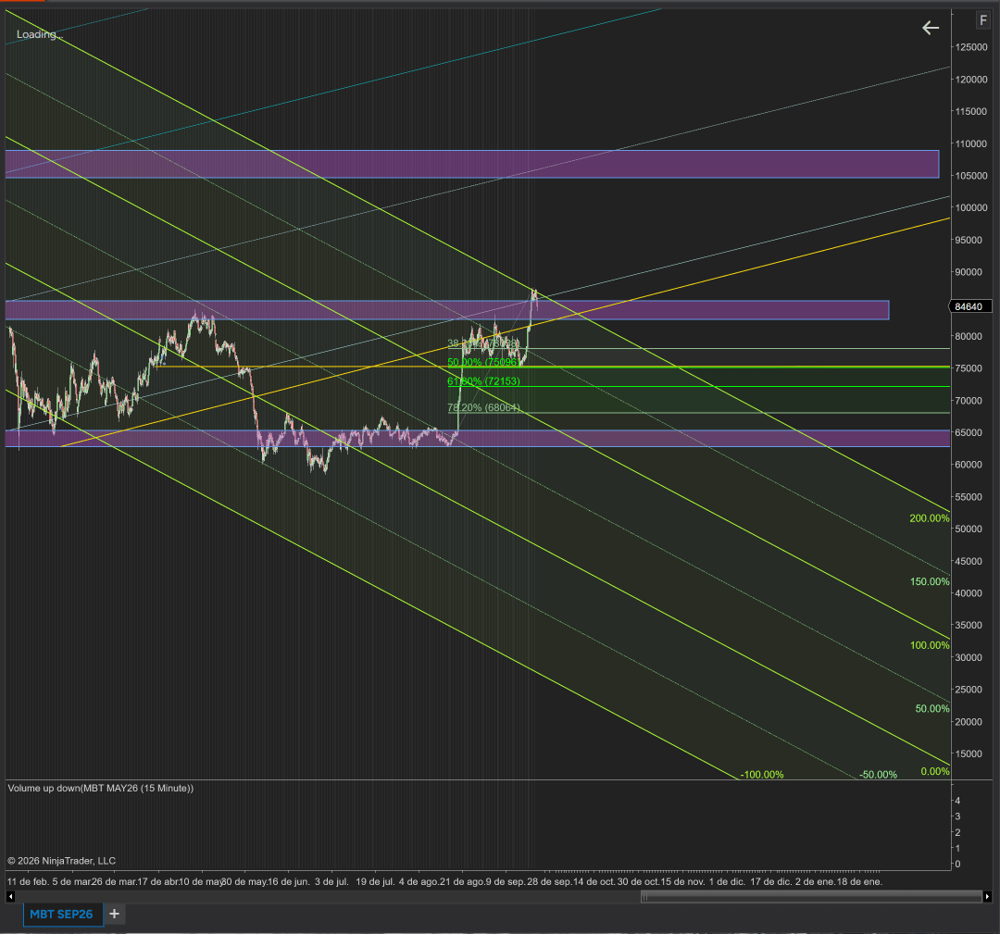
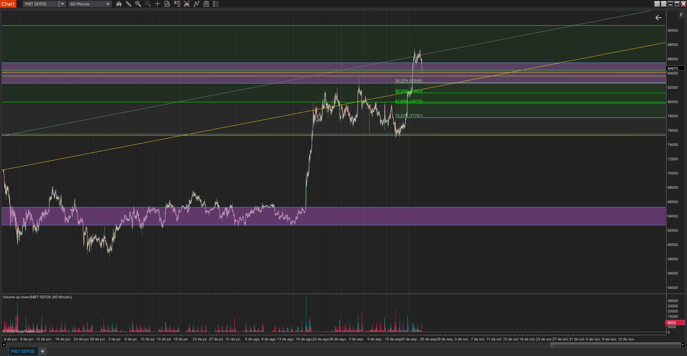

Bitcoin en septiembre
Aviso Este documento no es asesoría financiera. Es un marco de análisis técnico para la toma de decisiones propias.
01
Conclusión principal
El sesgo es de corrección técnica de 8–10% dentro de una tendencia alcista intermedia, con zona de recompra en 78,570–81,200 e invalidación en 75,000.
Instrumento: MBT (CME Micro Bitcoin Futures). Horizonte: 1 a 3 semanas. Precio de referencia: ~84,650.
Bitcoin rompió en agosto un rango de dos meses (62,800–65,200) con un impulso de alto volumen. Esta semana llegó a una zona de confluencia de resistencia en 86,500–87,300 y fue rechazado. Ahí coinciden la línea superior del tridente (pitchfork) bajista, la línea de tendencia alcista gris y el techo de la zona de oferta.

02
Tesis del analista
La tesis espera una corrección oficial de 8–10% desde el máximo de 87,300, hacia 78,570–80,316, antes de retomar la tendencia alcista.
El objetivo porcentual y los niveles de Fibonacci apuntan a la misma zona: una caída de 8–10% termina sobre el 61.8% y el cluster de soporte de 79,800–81,200. Esa coincidencia refuerza la zona.
03
Análisis independiente
La estructura intermedia sigue alcista mientras se sostenga 75,000, pero el rechazo en 87,300 valida una corrección de corto plazo.
Estructura. Desde agosto hay mínimos crecientes: 64,500 y luego ~75,300 a mediados de septiembre.
Rechazo en 87,300. El precio salió por arriba de la zona de oferta (82,600–85,500) y regresó dentro de ella en pocas velas, con forma de falsa ruptura. El volumen de este último empuje se ve menor que el del impulso de agosto, lo que sugiere menos convicción compradora.
Cluster de soporte principal: 79,800–81,200. Ahí coinciden el 50% (81,223), el 61.8% (79,777), la línea de tendencia alcista amarilla (hoy cerca de 81,000–81,500) y el nivel psicológico de 80,000. El nivel de liquidez de 80,600 queda en medio de esa franja.

Mapa de niveles
| Nivel | Tipo | Relevancia |
|---|---|---|
| 105,000–109,000 | Zona de oferta superior | Extensión de 261.8% |
| 90,000–90,600 | Resistencia | Primer objetivo si se rompe 87,300 |
| 86,500–87,300 | Resistencia | Confluencia del tridente, la línea gris y el máximo |
| 82,600–85,500 Precio ~84,650 | Zona de oferta | El precio está dentro de ella |
| 82,668 | 38.2% Fib | Primer soporte menor |
| 79,800–81,200 Decisión | Cluster de soporte | Zona de decisión principal |
| 78,570–80,316 Objetivo | Corrección de 8–10% | Objetivo de la tesis |
| 77,767 | 78.2% Fib | Último soporte antes del mínimo |
| 75,000–75,500 Invalidación | Mínimo creciente | Invalidación de la estructura alcista |
| 72,153 / 68,061 | 61.8% / 78.2% Fib mayores | Objetivos si se rompe 75,000 |
| 62,800–65,200 | Demanda | Base del rango previo |
04
Escenarios
El escenario base es una corrección de 8–10% que respeta el cluster de 79,800–81,200.
Las probabilidades son una ponderación subjetiva, no un cálculo.
05
Escenario C: extensiones de Fibonacci
Si se rompe 87,300, los objetivos son 90,560 y después la franja de 93,500–94,700, que tiene doble confluencia.
Detonante: recuperación de 85,500 y ruptura de 87,300 con cierre de 4H y volumen creciente.
Extensiones sobre el último swing, de 75,300 a 87,300 (12,000 puntos):
| Extensión | Nivel | Confluencia |
|---|---|---|
| 127.2% | ~90,560 | Línea horizontal de ~90,600: primer objetivo |
| 138.2% | ~91,880 | Objetivo intermedio |
| 161.8% | ~94,720 | Extensión principal: segundo objetivo |
| 200% | ~99,300 | Nivel psicológico de 100,000 |
| 261.8% | ~106,720 | Dentro de la zona de oferta de 105,000–109,000 |
Como referencia de mayor plazo, el swing de agosto (64,500 a 87,300) da un 127.2% en ~93,500 y un 161.8% en ~101,400.
Entrar en el retest de 85,500–87,300 tras la ruptura, sin perseguir la vela, con stop por debajo de 84,500.
Tomar ganancias parciales en 90,560 y en 93,500–94,700, y dejar un remanente con stop dinámico hacia 99,300.
06
Integración de ambos análisis
Ambos análisis coinciden en el sesgo correctivo y en los niveles; la diferencia está en cubrir antes de 75,000.
Coincidencias: sesgo correctivo de corto plazo, relevancia del 50–61.8% como zona de reacción y 75,000 como frontera entre corrección y cambio de estructura.
Diferencia principal: esperar a 75,000 para cubrir implica aceptar una caída de ~14% desde el máximo. La gestión escalonada reduce ese costo:
- Zona de 78,570–80,316 (caída de 8–10%): recompra con confirmación, como una vela de rechazo o la recuperación del 50%.
- Cierre de 4H por debajo de 78,500: la corrección excedió lo esperado; cobertura parcial o toma de ganancias de 30–50%.
- Cierre diario por debajo de 75,000: cobertura completa o salida.
Diferencia secundaria: la tesis asume que el precio baja primero. El escenario C tiene su plan definido en la sección 05 para no quedar fuera de una continuación.
07
Gestión de riesgo e invalidaciones
Cada contrato MBT equivale a 0.1 BTC, así que cada 1,000 puntos equivalen a $100 por contrato.
Por ejemplo, una compra en 81,000 con stop en 79,500 arriesga ~$150 por contrato. El número de contratos se define por la pérdida máxima aceptada por operación, no por la convicción.
Invalidaciones
Un cierre diario por encima de 87,300 con volumen creciente invalida el sesgo bajista.
Un cierre diario por debajo de 75,000 invalida la tendencia alcista intermedia.
Riesgo externo: datos de inflación, decisiones de la Fed o flujos de ETFs pueden dominar sobre cualquier nivel técnico. Conviene revisar el calendario macro de la semana antes de entrar.
Gracias por leer hasta aquí.
Este memo es mi lectura del mercado esta semana, con los niveles y las invalidaciones puestos sobre la mesa antes de operar. Si te sirve para ordenar la tuya, ya cumplió su función.
Si el precio hace otra cosa, el plan también lo contempla. Eso es lo que separa una tesis de una corazonada.
Nos leemos en el siguiente memo. Recibe un saludo cordial,